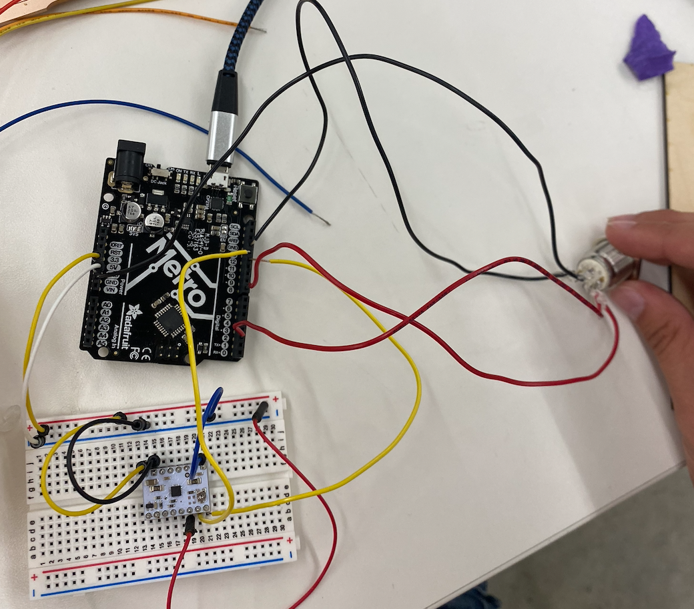
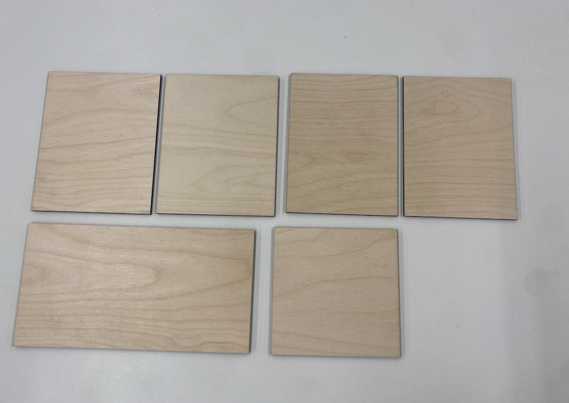
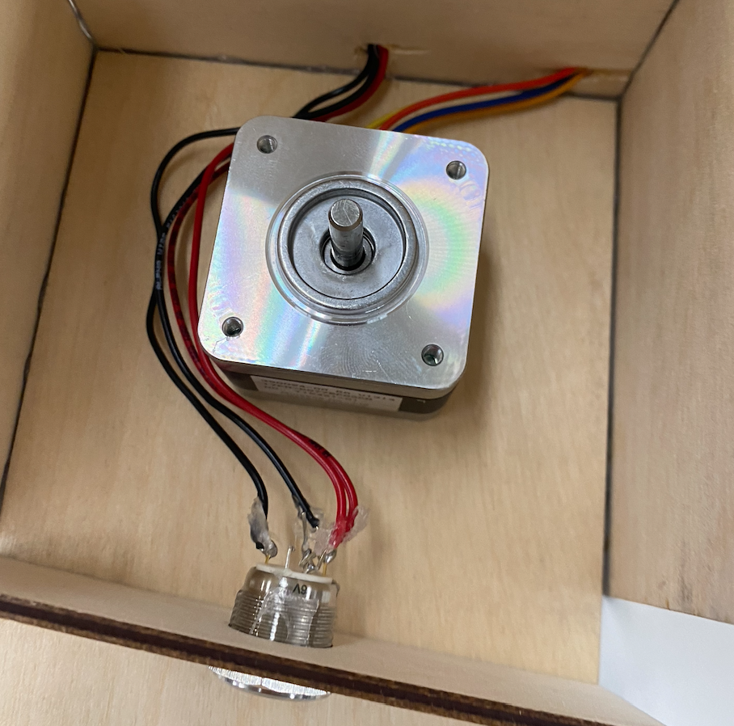
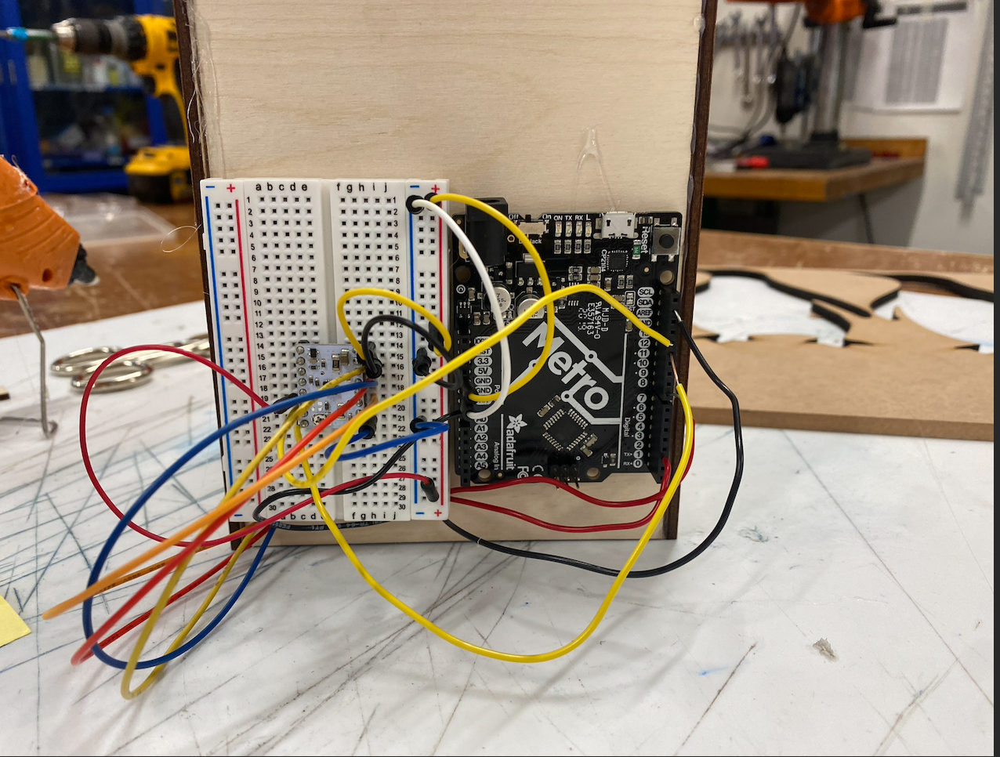
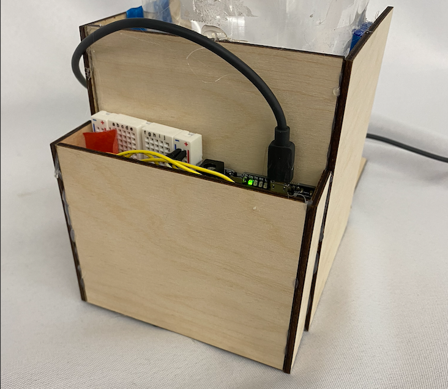
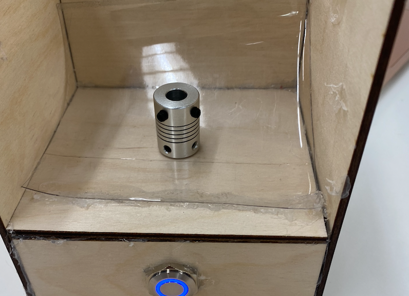
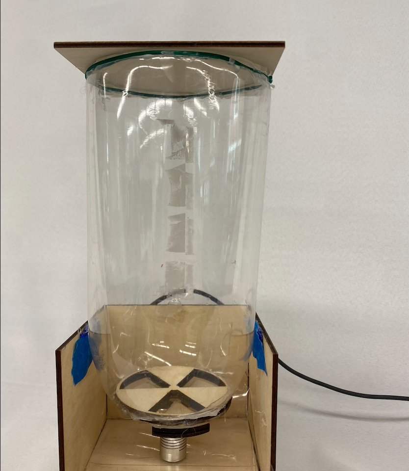

For my final project, there were quite a few things to do before I started. I needed a list of materials, a timeline, and a plan! I'm making an automatic cat feeder.
Here's the list of materials:
For my timeline, I wanted the design completed by July 10th, an LCD interface and app by July 24th, and to assemble it the 29th and 30th. My progress through these steps is below:
My dispensing mechanism was inspired by a gumball machine, and I based the design off some models I had seen online. It was fun to design, and I'm looking forward to building it!
I worked on the dispensing mechanism week 10, and I used a stepper motor. Eventually, I refined it and made the code:
// Include the AccelStepper Library
#include <AccelStepper.h>
// Define pin connections
const int stepsPerRevolution = 200;
const int dirPin = 12;
const int stepPin = 13;
const int ledPin = 8;
int rotationCW = 0;
int rotationCCW = 0;
int sensorValue = 0; //
int location = 1;
// Define motor interface type
#define motorInterfaceType 1
// Creates an instance
AccelStepper stepper(1, stepPin, dirPin);
void setup() {
stepper.setSpeed(1500);
stepper.setAcceleration(1000);
Serial.begin(9600);
pinMode(stepPin, OUTPUT);
pinMode(dirPin, OUTPUT);
//stepper.moveTo(200);
pinMode(2, INPUT_PULLUP);
pinMode(8, OUTPUT);
void loop() {
digitalWrite(8, HIGH);
int sensorValue = digitalRead(2);
Serial.println(sensorValue);
if (sensorValue == 0) {
if (location == 1) {
Serial.println("clockwise");
digitalWrite(dirPin, LOW);
rotationCW = (0.5 * stepsPerRevolution);
stepper.moveTo(rotationCW);
location = 2;
delay(500);
Serial.println("Location 2");
} else {
rotationCCW = (0);
digitalWrite(dirPin, HIGH);
Serial.println("counterclockwise");
stepper.moveTo(rotationCCW);
location = 1;
delay(500);
Serial.println("Location 1");
}
}
stepper.run();
}
The wiring was fairly straight forward since I already had the motor wired. Adding the button was a simple connection.
This was the most time consuming part, mainly because the laser cutter was being used a lot of the time. I had to cut out the box part, a false bottom the motor would come out of, and the case to hide the wiring. I was able to print almost everything, and I connected them with hot glue. I would've used wood glue except it takes a long time to dry.
After gluing the box together and putting part of the false bottom, I had to wire the button and motor through it. I did this by drilling holes. I re-wired then mounted the metro board and breadboard onto the back, which was a bit of a pain.
 Next, I put on the back box.
I had to attach the dispensing mechanism to the motor which was a pain because the motor's shaft was smooth and hot glue didn't stick. I ended up using a connector. However, a major flaw is that the mechanism isn't level so dispensing can't be as seamless as it would otherwise. I tried for a couple of hours to fix it, but I wasn't able to.
Now, for the place where the food/cat food is held, I used a Pepsi bottle because of the shape. I wish there was something more readily available that looked nicer, but it was what I could use. It wasn't too bad to work with except it isn't as clear as I would've wanted it. I wanted to make a nice lid, except I couldn't cut the top level and that made it very hard. I settled just placing wood over it, but this wouldn't keep the cat food. I hope to fix this in the future. I also had to use tape on the side for padding.
For the demo, I brought the feeder home to test on my cats. The lighting wasn't ideal, and I had to craft a tray because the slope I made didn't work.
This project was fun overall. It was a learning process, and reflecting back on it there was a lot of things I'd do differently. Maybe I'd use a waterbottle for the feeder, and also 3D print a more precise dispensing mechanism. I wish I had painted or stained the wood, but I didn't have enough time. I look forward to doing more projects in the future!